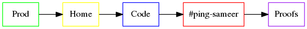

TOC
Résumé
Plans as probabilistic schemes
tweets
[1]
I got a Résumé to cite on this page.Sire!
Plans as probabilistic schemes
Poetically : plans = dreams + philosophy
Plans can be as much a scheme as with operating parameters,regulations, component schemes, principles and logic, as a TV programme or the machines, we use everyday.
We can repair a machine we understand, if it stops working, by cutting it open, identifying the point[s] of problem and fix or repalce it.
It's not the same with plans in their conventional sense.As unlike plans, these machines are deterministic.Moreover, plans may appear to work
for a very long time, despite being broken deep down and for most part only their much later cut matters, which is not possible without
early stages of the plans.
We don't know the future, although we are not surprised often.
Plans in their conventional sense require, no surprises (pleasent or not) i.e. a pureley deterministic scenarios, in order to work.
Which can't happen for a suffiently long interval and even short durations, don't kill the possibility of surpirse[s].
And we just don't have enough information to account or model all probabilities exhaustively.Even that would have been just a model.
It could have told the likelihood of possible outcomes, but not the upcoming outcome[s].
But if we know all that can matter for the goal we set or the what we don't know, we can define a confidence interval,which accounts for the probailites we don't have.
That way we can have some certainity, when we go through the details, identify the point[s] of problem and correcting them, if a plan does not work.
It is a good motivation to meticulously,painstakingly modularize your plan[s], define the working principle[s],specify the limits and operating parameters and most importantly not
settng too many goals, with too many plans.As we have finite resources and limited time to correct.[1]
It's not entierly practical , but but more real. Aleternatives can be
Not planning altogether
Setting to many goals and too many plans [B,C ...Z] and setting a meta-goal of maximum number of plans executed and mininum % of goals met, just like a throw of darts. It is opposite of [1] and sort of Stalinist
Speculating the likelihood of pleseant surprises vs unpleasent ones
Sit on the benches and just observe and analyse instead of executing
If-else -> what-ifs
Keep your finger crossed or take a leap of faith in your presence of mind
DIY : coin more alternatives
footnotes
Learning curve and Milage
Analyses is deeper than observation is deeper than spotting